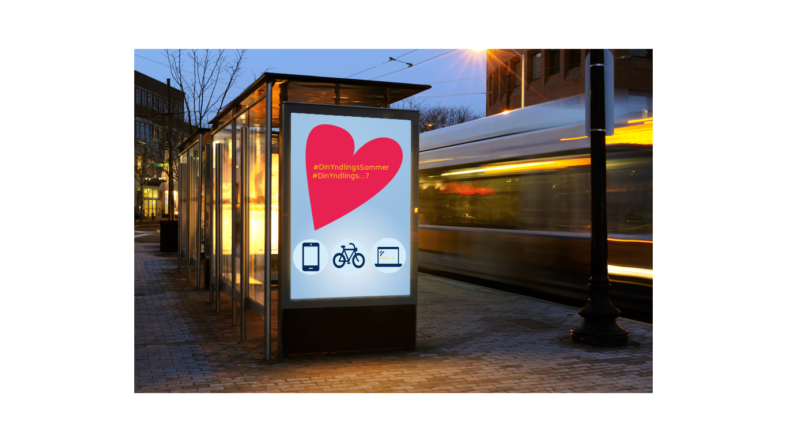
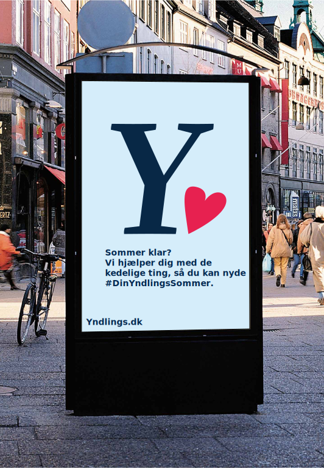

De offline reklamer for yndlings, skal være startskuddet i vores sommer kampagne, det bliver det første som kører i vores kampagne, det bliver visuelt med udgangspunkt i yndlings hjerte, som er i deres logo. Hjertet et forstørret op, det er stort rød og varmende. I hjertet er der en mobiltelefon, som illustrere yndlings ting, hashtagget #DinYndlingsSommer, appellerer til yndlings forsikring, og sommer tema. De offline reklamer skal få de unge til at få lyst til at undersøge mere omkring yndlings.dk. Hjertet skal illustrere at yndlings forsikring passer på dine yndlingsting, og er med dig overalt, så du kan slappe af og nyde din yndlings sommer. Reklamerne har tekst med yndling.dk nederes på plakaten, for at skabe let adgang for de unge til at undersøge mere. Reklamerne beskriver også at det er en forsikring, så de unge får et indblik i, hvad reklamen går ud på og tage stilling til sin egen forsikring eller om de er forsikret.